4 Vertical profiles
In this section you will learn to compute, interpret and analyze vertical profiles (vp). A vp consists of the (bird) density, speed and directions at different altitudes at the location of a single radar. It is typically calculated for all data within a cylinder of 35 km radius around the radar, i.e. only containing data at relatively short distances, where the radar beam is still sufficiently narrow to resolve altitude information.
Section 3 has examples that show how to process polar volume data into vertical profiles. To save time, we will start below with a list of pre-processed vertical profiles for the Brownsville radar in Texas (KBRO).
4.1 Loading processed vertical profiles
# Usually we would load processed vertical profiles (vp files) by:
# my_vplist <- read_vpfiles("./your/directory/with/processed/profiles/goes/here")
# my_vplist contains after running the command a list of vertical profile (vp) objects
# To save time, we load these data directly from file
my_vplist <- readRDS("data/KBRO20170514.rds")
# print the length of the vplist object. It should contain 95 profiles
length(my_vplist)## [1] 1154.2 Inspecting single vertical profiles
Now that you have loaded a list of vertical profiles, we can start exploring them. We will start with plotting and inspecting single vertical profiles, i.e. a single profile from the list of vp objects you have just loaded.
# let's extract a profile from the list, in this example the 41st profile:
my_vp <- my_vplist[[41]]
# print some info for this profile to the console
my_vp## Vertical profile (class vp)
##
## radar: KBRO
## source: RAD:KBGM,PLC:Brownsville
## nominal time: 2017-05-14 05:58:00
## generated by: vol2bird 0.3.17# test whether this profile was collected at day time:
check_night(my_vp)## [1] TRUE# plot the vertical profile, in terms of reflectivity factor
plot(my_vp, quantity = "dbz")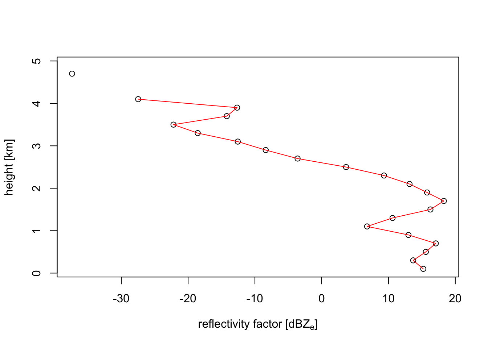
# plot the vertical profile, in terms of (linear) reflectivity
plot(my_vp, quantity = "eta")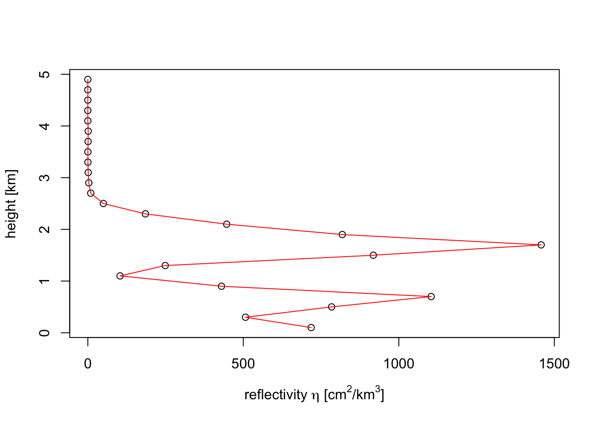
eta and dbz are closely related, the main difference is that reflectivity factors are logarithmic, and reflectivities linear. You can convert one into the other using eta_to_dbz() and dbz_to_eta() functions, which follows this simple formula:
eta = (radar-wavelength dependent constant) * 10^(dbz/10)The reflectivity factor dBZ is the quantity used by most meteorologist. It has the useful property that at different radar wavelengths (e.g. S-band versus C-band) the same amount of precipitation shows up at similar reflectivity factors. The same holds for insects, as well as any other target that is much smaller than the radar wavelength (S-band = 10 cm, C-band = 5 cm), the so-called Rayleigh-scattering limit.
In the case of birds we are outside the Rayleigh limit, because birds are of similar size as the radar wavelength. In this limit reflectivity eta is more similar between S-band and C-band. eta is also more directly related to the density of birds, since eta can be expressed as (bird density) x (radar cross section per bird). For these two reasons, for weather radar ornithologists reflectivity eta is the more conventional unit.
# let's plot the vertical profile, in terms of bird density
plot(my_vp, quantity = "dens")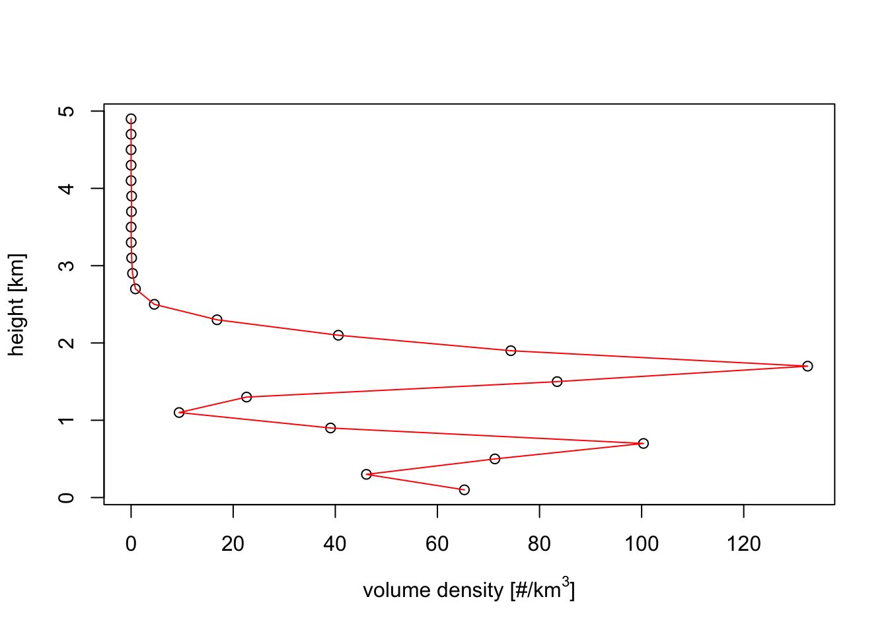
# print the currently assumed radar cross section (RCS) per bird:
rcs(my_vp)## [1] 11Exercise 5: If you change your assumption on the bird’s radar cross section in the previous example, and assume the RCS is 10 times as large, what will be the effect on the bird density profile?
# Answer:
# All bird densities will be a factor 10 times lower.The assumed radar cross section can be changed as follows:
# let's change the RCS to 110 cm^2
rcs(my_vp) <- 110Exercise 6: Verify your answers on the previous two questions, by re-plotting the vertical profiles for the bird density quantity.
# After changing the RCS above, we simply plot the vertical profile again
plot(my_vp)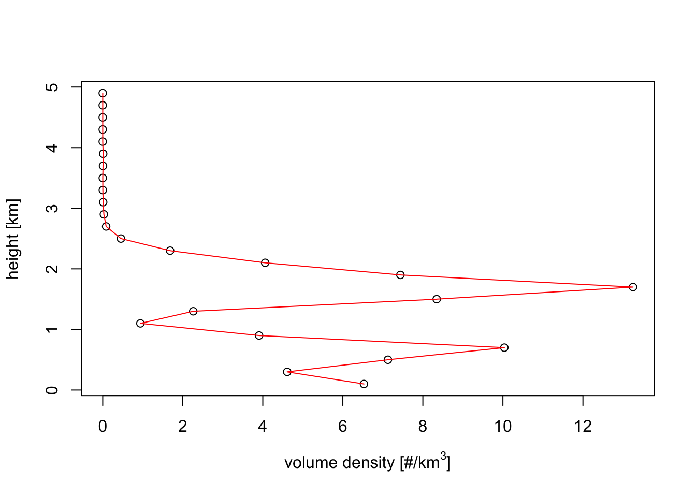
# Indeed the densities are scaled down by a factor 104.3 Plotting vertical profile time series
We will now examine multiple vertical profiles at once that are ordered into a time series, e.g. the vertical profiles obtained from a single radar over a full day.
# convert the list of vertical profiles into a time series:
my_vpts <- bind_into_vpts(my_vplist)
# time series objects can be subsetted, just as you may be used to with vectors
# here we subset the first 50 timesteps:
my_vpts[1:50]## Irregular time series of vertical profiles (class vpts)
##
## radar: KBRO
## # profiles: 50
## time range (UTC): 2017-05-14 00:09:00 - 2017-05-14 06:54:00
## time step (s): min: 300 max: 1740# here we extract a single timestep, which gives you back a vertical profile class object:
my_vpts[100]## Vertical profile (class vp)
##
## radar: KBRO
## source: RAD:KBGM,PLC:Brownsville
## nominal time: 2017-05-14 16:03:00
## generated by: vol2bird 0.3.17# to plot the full time series:
plot(my_vpts)## Warning in plot.vpts(my_vpts): Irregular time-series: missing profiles will not
## be visible. Use 'regularize_vpts' to make time series regular.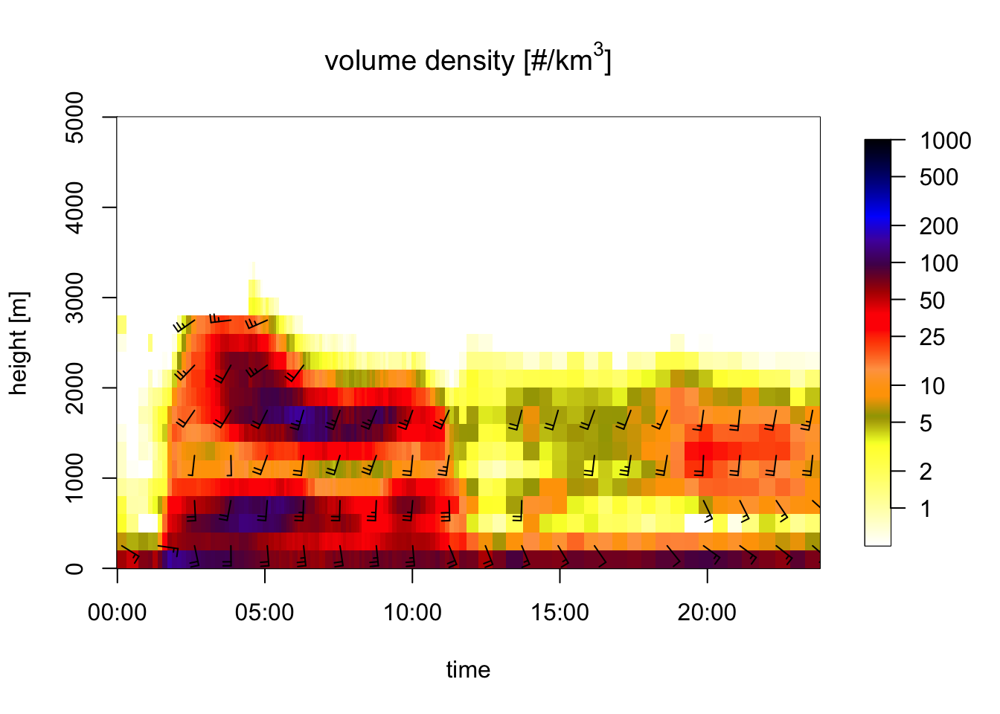
# check the help file for the plotting function of profile time series
# Because profile timeseries are of class 'vpts', it's associated plotting function
# is called plot.vpts:
?plot.vptsLet’s make a plot for a subselection of the time series:
# filter our vpts for night time
my_vpts_night <- filter_vpts(my_vpts, night=TRUE)
# plot this smaller time series:
plot(my_vpts_night)## Warning in plot.vpts(my_vpts_night): Irregular time-series: missing profiles
## will not be visible. Use 'regularize_vpts' to make time series regular.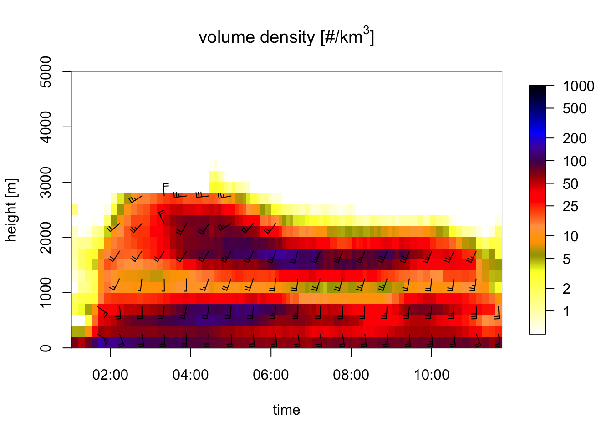
Exercise 7: Interpret the wind barbs in the profile time series figure: what is the approximate speed and direction at 1500 meter at 6 UTC? In the speed barbs, each half flag represents 2.5 m/s, each full flag 5 m/s, [each pennant (triangle) 25 m/s, not occurring in this case].
# Answer:
#
# At 1500 meter 6 UTC the wind barbs have 2 full flags and one half flag.
# Therefore the ground speed is approximately 2x5 + 2.5 = 12.5 m/s.Exercise 8: Extract the vertical profile at 6 UTC from the time series and plot the vertical profile of ground speed (quantity ff). Hint: use function filter_vpts() to extract the 6 UTC profile. Check whether your answer to the previous question was approximately correct.
# First extract the profile at 6 UTC:
vp_6UTC <- filter_vpts(my_vpts_night, nearest = "2017-05-14 06:00")
plot(vp_6UTC, quantity = "ff")
# Plot the ground speed (ff):
plot(vp_6UTC, quantity = "ff")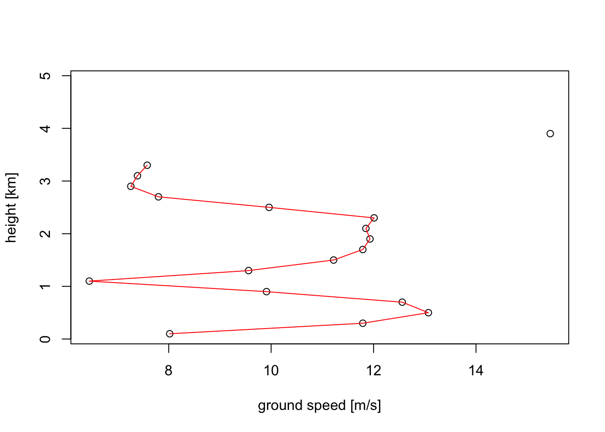
# Speeds at 1500 metre is approximately 12 m/s, confirming our earlier reading above of 12.5 m/s.4.4 Vertical and time integration of profiles
Often you will want to sum together all the migrants in the vertical dimension, for example if you want a single index of how many birds are migrating at a certain instant. There are at least two ways in which you can do that:
- by calculating the vertically integrated bird density (VID), which is surface density as opposed to a volume densities you have been plotting in the previous exercises: this number gives you how many migrants are aloft per square kilometer earth’s surface (unit individuals/km\(^{2}\)), obtained by a vertical integration of the volume densities (unit individuals/km\(^{3}\)).
- Note that the VID quantity doesn’t depend on the speed of the migrants. A common measure that reflects both the density and speed of the migration is migration traffic rate (MTR). This is flux measure that gives you how many migrants are passing the radar station per unit of time and per unit of distance perpendicular to the migratory direction (unit individuals/km/hour).
We will be using bioRad’s integrate_profile() function to calculate these quantities:
# Let's continue with the vpts object created in the previous example.
# The vertically integrated quantities are calculated as follows:
my_vpi <- integrate_profile(my_vpts)
# The my_vpi object you created is a vpi class object, which is an acronym for "vertical profile integrated". It has its own plot method, which by default plots migration traffic rate (MTR):
plot(my_vpi)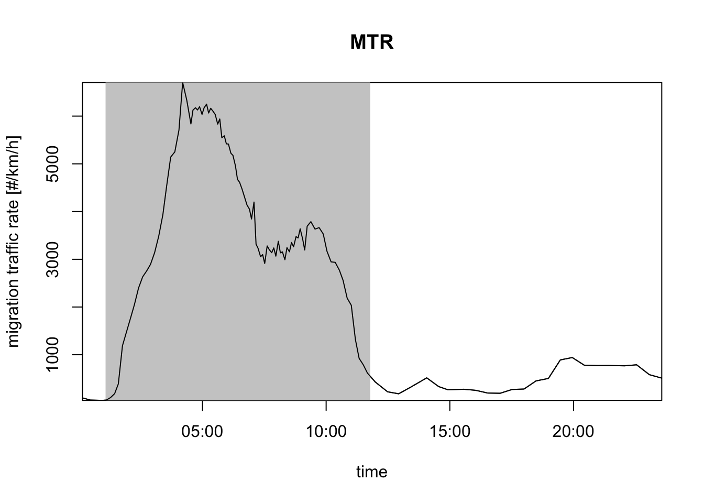
# you can also plot vertically integrated densities (VID):
plot(my_vpi, quantity = "vid")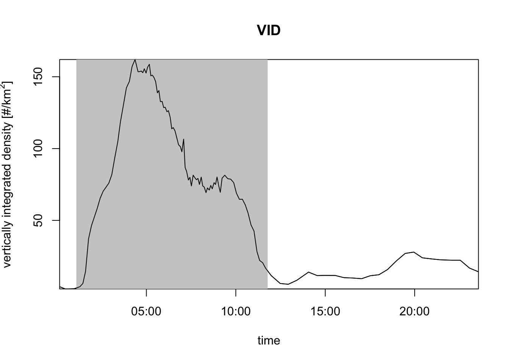
# the gray and white shading indicates day and night, which is calculated
# from the date and the radar position. You can also turn this off:
plot(my_vpi, night_shade = FALSE)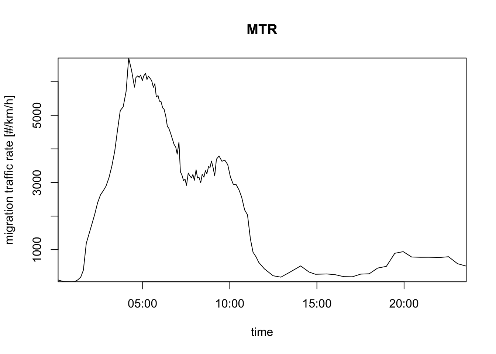
# plot the cumulative number of birds passing the radar, i.e. migration traffic (mt):
plot(my_vpi, quantity = "mt")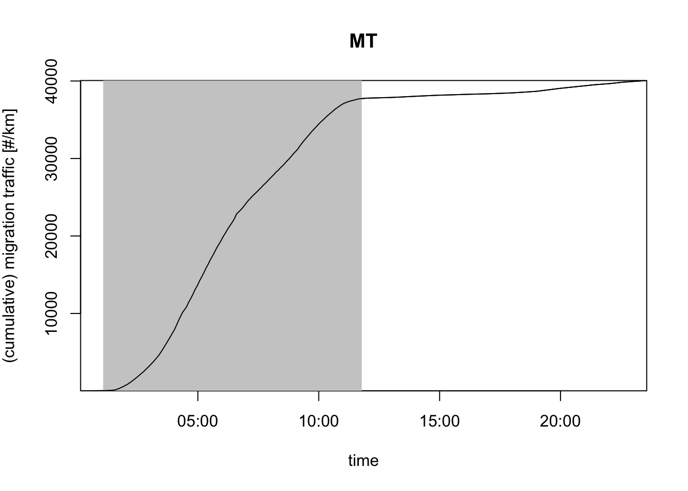
# execute `?plot.vpi` to open the help page listing all the options.
?plot.vpiThe following questions only require pen and paper. Assume a night migration event in which the volume density of birds from 0-1 km above ground is 200 birds per cubic kilometer, and from 1-1.5 km 100 birds per cubic kilometer. Above 1500 meter there are no birds.
Exercise 9: What is in this case the bird’s vertically integrated density (VID)? Give your answer in units birds/km\(^2\).
# Answer:
#
# VID = (200 birds / km^3) * (1 km) + (100 birds / km^3) * (0.5 km)
# = 250 birds / km^2Exercise 10: Let’s assume that in the lower layer birds fly at 50 km/hour, and in the upper layer at 100 km/hour. What is in this case the migration traffic rate across a transect perpendicular to the direction of movement? Give your answer in units birds/km/hour.
# Answer:
#
# MTR = (200 birds / km^3) * (50 km / hour) * (1 km) + (100 birds / km^3) * (100 km / hour) * (0.5 km)
# = 10000 birds / km / hour + 5000 birds / km / hour
# = 15000 birds / km / hourExercise 11:Let’s assume migration continued for exactly three hours after sunset, and then halted abruptly. How many birds have passed a 10 km transect perpendicular to the direction of movement in this night? Give your answer in terms of migration traffic (mt) in units birds/km.
# Answer:
#
# MT = MTR * (3 hour) = (15000 birds / km / hour) * (3 hour)
# = 45000 birds / km
# for a 10 kilometer transect:
# Number_of_birds = 10 km * 45000 birds / km = 450000 birdsBoth MTR, VID and MT depend on the assumed radar cross section (RCS) per bird. If you are unwilling/unable to specify RCS, alternatively you can use two closely related quantities that make no assumptions RCS:
# instead of vertically integrated density (VID), you can use vertically integrated reflectivity (VIR):
plot(my_vpi, quantity = "vir")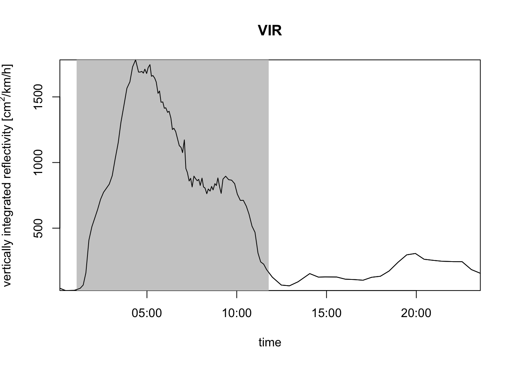
# instead of migration traffic rate (MTR), you can use the reflectivity traffic rate (RTR):
plot(my_vpi, quantity = "rtr")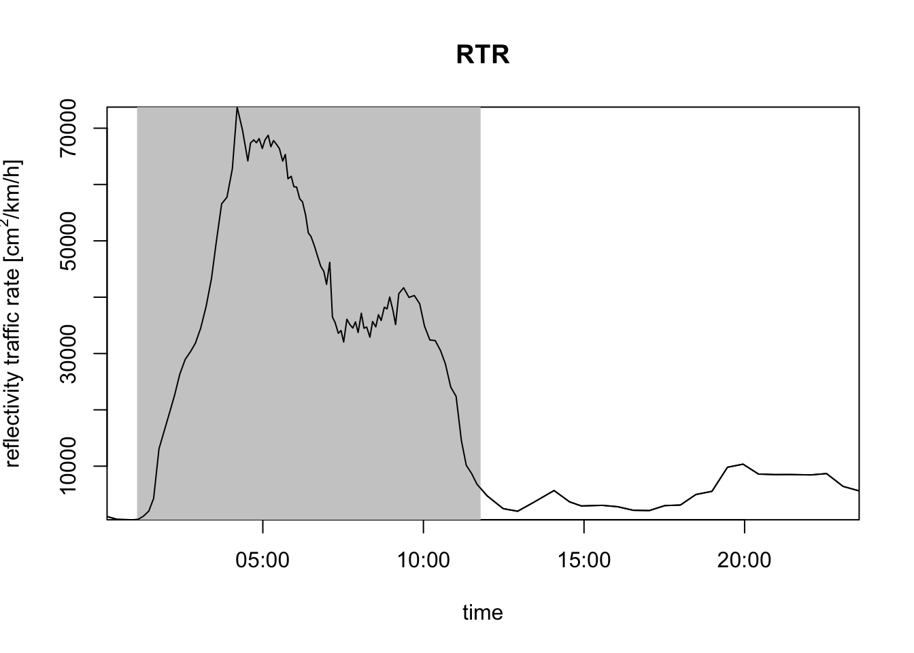
# instead of migration traffic (MT), you can use the reflectivity traffic (RT):
plot(my_vpi, quantity = "rt")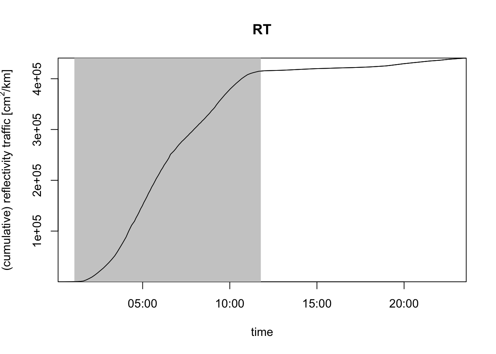
VIR gives you the total cross-sectional area of air-borne targets per square kilometer of ground surface, whereas RTR gives you the total cross-sectional area of targets flying across a one kilometer line perpendicular to the migratory flow per hour.
4.5 Inspecting precipitation signals in profiles
Precipitation is known to have a major influence on the timing and intensity of migration, therefore it is a useful skill to be able to inspect profiles for presence of precipitation.
Also, although automated bird quantification algorithms become more and more reliable, distinguishing precipitation from birds remains challenging for algorithms in specific cases. It is therefore important to have the skills to inspect suspicious profiles. That may help you to identify potential errors of the automated methods, and prevent your from overinterpreting the data.
An easy way of doing that is plotting the vertical profile of total reflectivity (quantity DBZH), which includes everything: birds, insects and precipitation. Precipitation often has higher reflectivities than birds, and also extends to much higher altitudes.
# load a time series for the KBGM radar in Binghamton, NY
load("data/KBGM20170527-20170602.RData")
# print the loaded vpts time series for this radar:
my_vpts## Warning in print.vpts(x): `x` is a legacy `vpts` object without a column
## `height`. Use convert_legacy() to avoid errors.## Regular time series of vertical profiles (class vpts)
##
## radar: KBGM
## # profiles: 284
## time range (UTC): 2017-05-27 08:31:00 - 2017-06-02 04:00:00
## time step (s): 1770# plot the bird density over time:
plot(my_vpts, quantity = "dens")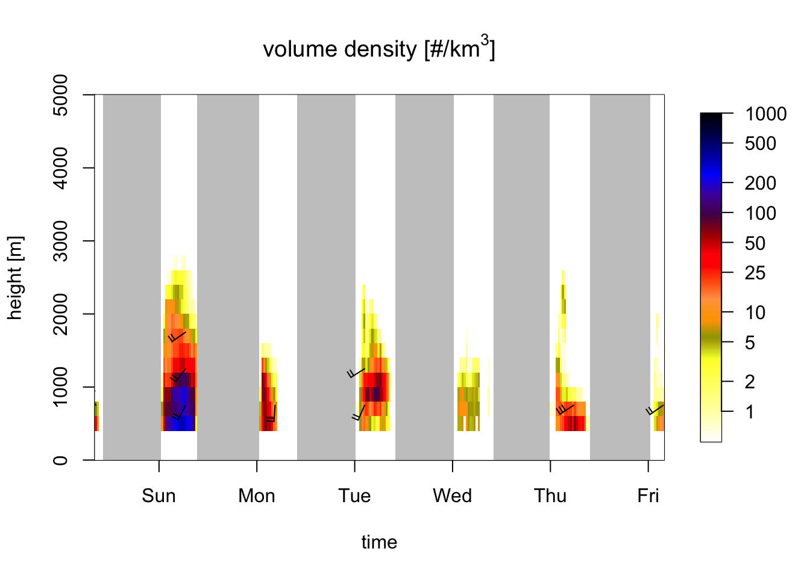
Exercise 12: Compare the above plot for bird density (quantity dens) with a profile plot for total reflectivity (quantity DBZH, showing birds and precipitation combined). Compare the two plots to visually identify periods and altitude layers with precipitation.
# also show meteorological signals:
plot(my_vpts, quantity = "DBZH")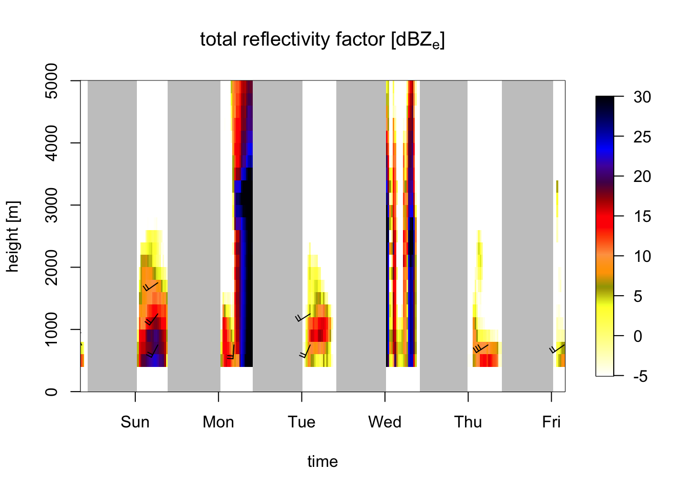
# Periods with high reflectivities extending to high altitudes indicate precipitation,
# i.e. second half of the second night, and on and off during the fourth night.